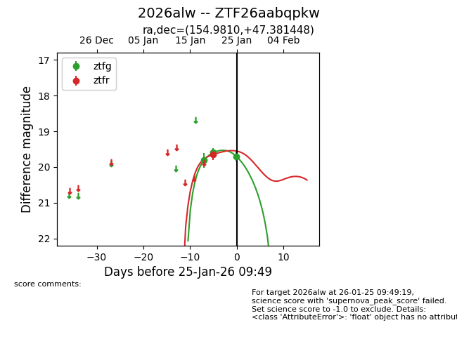
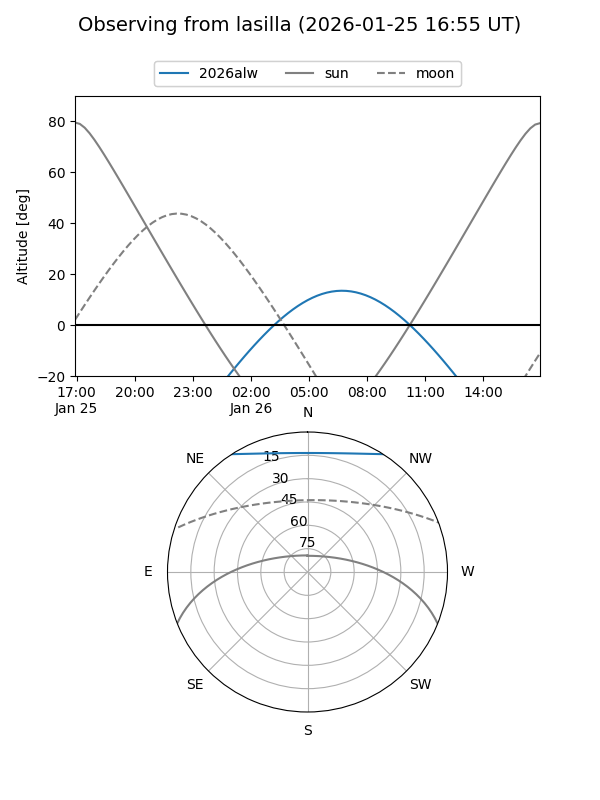
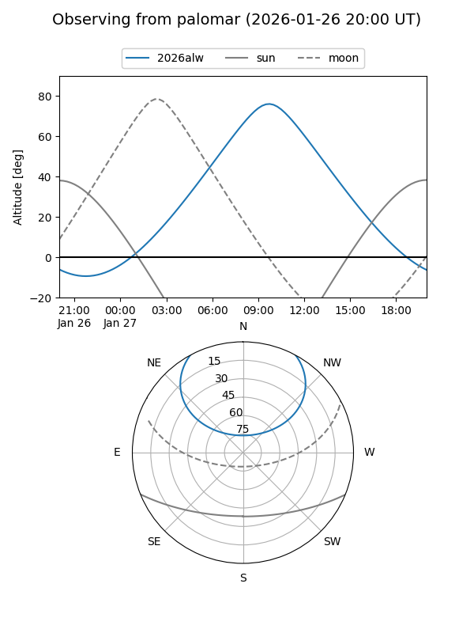
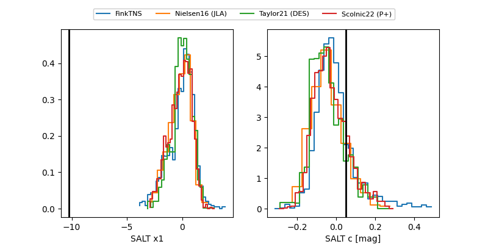

2026alw
Target 2026alw at 2026-01-25 09:51
Aliases and brokers:
FINK: link
Lasair: link
ALeRCE: link
TNS: link
YSE: link
alt names
ZTF26aabqpkw (ztf,fink_ztf)
2026alw (tns,yse)
Coordinates:
equatorial (ra, dec) = 154.9810,+47.38145
equatorial (HMS+DMS) = 10:19:55.43,+47:22:53.21
galactic (l, b) = (168.2452,+54.21411)
Flags:
Photometry:
last ztfg=19.71, ztfr=19.65
3 ztfg, 1 ztfr detections
Lightcurve

Visibility


Additional plots
